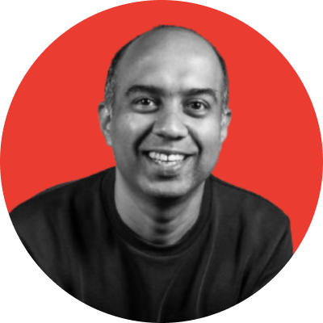

Hello. I’m Kedar in dhamaKedar.
Here’s how I can help
- Grow your revenue through better product experiences (Elevate product)
- Increase discovery, adoption and engagement of your features (Product Marketing)
- Test MVPs and build businesses from scratch (Design)
- Improve the taste level of your team, product, and communication (Mentor)
- Empower your design teams to use AI tools (Upskill)
I’ve spent the last 20 years building digital products across travel, entertainment, banking, and real estate. I’ve helped companies grow revenue, simplify complexity, scale teams, and make products people actually want to use.
I’ve led teams at Cleartrip, BookMyShow, Jupiter, and PropertyGuru in Singapore.
I am a mentor for startups at National University of Singapore for BLOCK71 and a knowledge partner for India Futures Lab, a micro-university based in Goa.
Now, I work with a small number of select clients. Independently. Fractional. Unlike traditional design consulting. I enjoy helping companies go from 0 to 1. Sometimes 1 to 10. After that it’s just meetings and… (you know what I mean)
How I have done in the past
- Reimagined Fixed Deposits that resulted in 23% more savings per account.
- 300% growth in ratings and review through pure design
- Reduces Jupiter’s Debit Card delivery time from 7 days to 2 days
- Built ListMyShow to reduce event onboarding from 4 days to 15 mins
- Transformed BookMyShow from ticketing giant to Entertainment Powerhouse
- Built a multi-brand, multilingual WCAG compliant design system for 4 geographies
What people say about me?
- “Excellent storyteller” Jiten Gupta (Founder of Jupiter.Money)
- “Impatient doer” Andrew McGlinchey (VP of Product at PropertyGuru)
- “No-nonsense guy” Subramanya Sharma (Better Ed Co)
- “Highly dependable” Rahool Gadkari (Co-founder Neufin)
- “Gets things done or does it himself” Yash Belvadi (Co-founder Surge.Credit)
- “Excellent craftsman” Jeremy Williams (MD of PropertyGuru)
- “Guy with high standards and ethics” Nishant Chaudhary (Product Leader at Microsoft and Intuit)
I work best with anyone who…
- Care deeply about craft & design
- Sweat the details
- Want to build something useful, meaningful, and commercially solid
- Understand that brand, product, business, and culture are all connected
I’m probably not a fit if you
- Talk about growth at ‘any cost’
- Treat users like metrics on a dashboard
- Build addictive products and call it engagement
- Lack imagination
- Consider ‘ethics and accessibility’ as a PR strategy
- Want PPT folks
Outside work, I run The Gyaan Project, a podcast I’ve hosted since 2016 with 300+ conversations across design, art, architecture, philosophy, cinema, music, and culture. I am writing a book called “The Design in Everything.”
You can explore all my work at nimkarkedar.com. Let’s connect if the vibe matches.